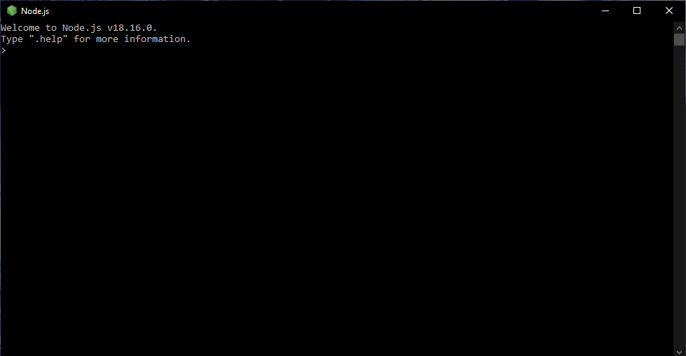

| Contenido | |
| Propósito del Software | Proceso de instalación |
| Video de instalación (Auxiliar) | Evidencia de instalación |
Node.js es un entorno en tiempo de ejecución multiplataforma, de código abierto, para la capa del servidor basado en el lenguaje de programación JavaScript, asíncrono, con E/S de datos en una arquitectura orientada a eventos y basado en el motor V8 de Google.
Para instalar NodeJS, deberás:
En este video se explica el proceso de instalación de Node JS
Esta es mi evidencia de instalación
